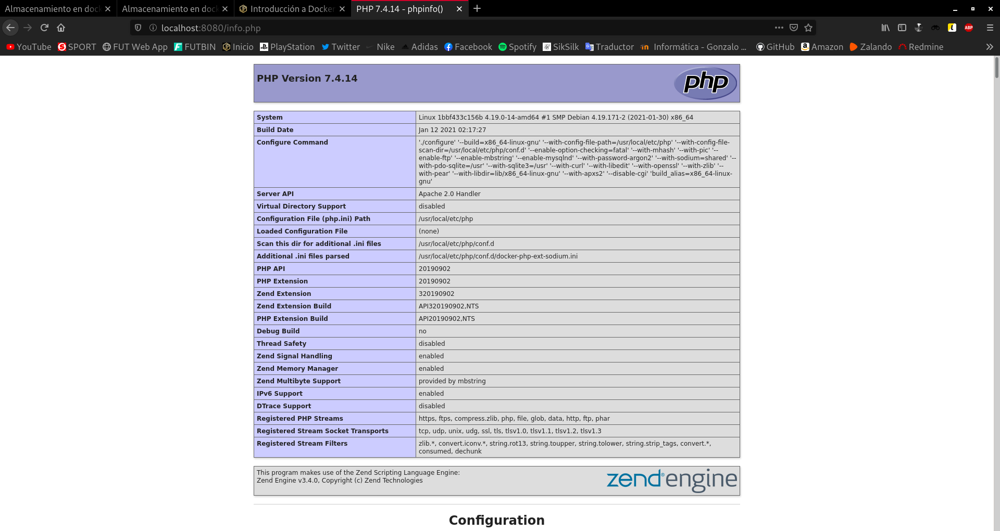
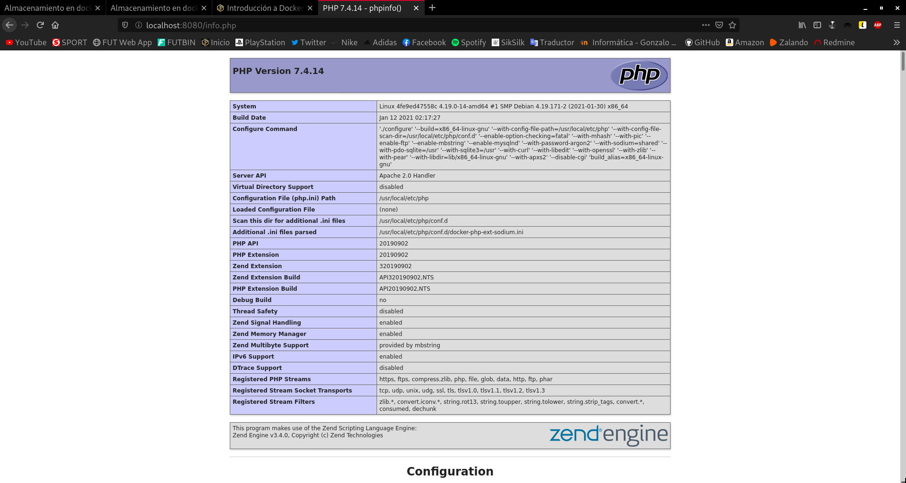
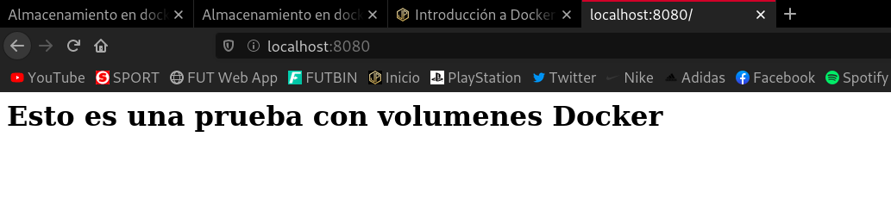
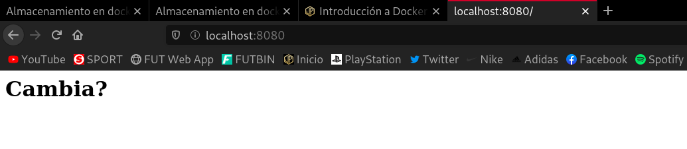
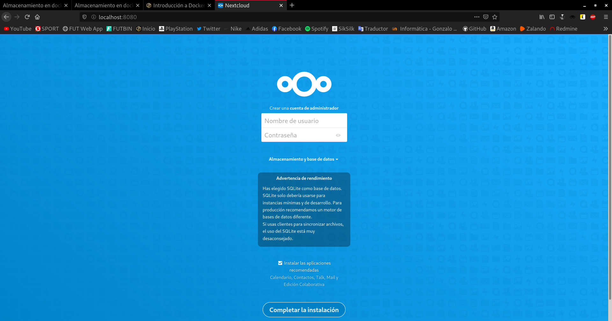
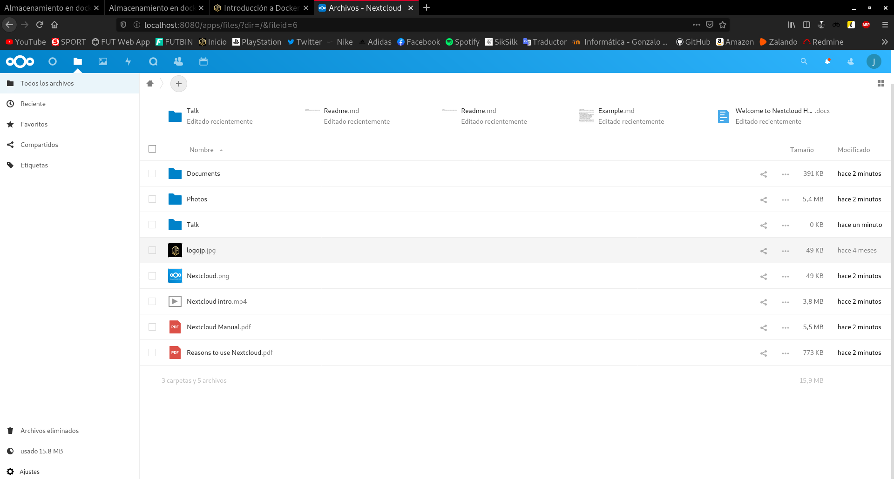
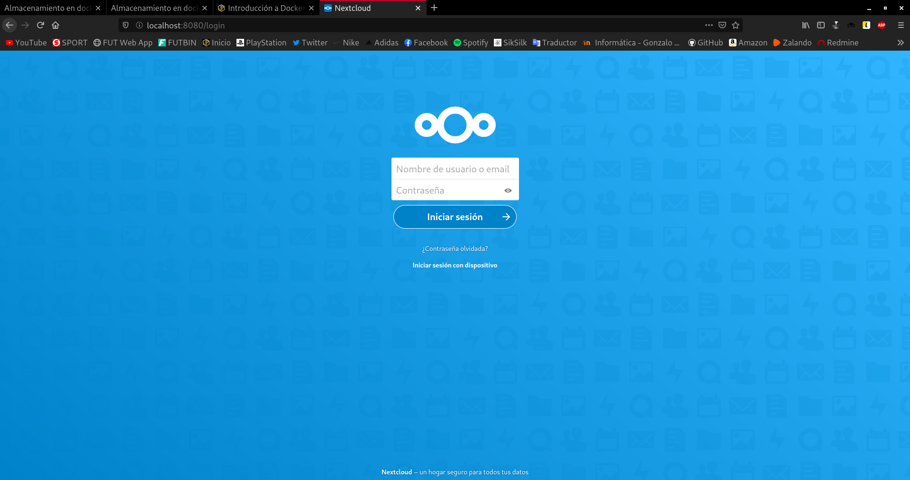

Almacenamiento
1. Vamos a trabajar con volúmenes docker:
- Crea un volumen docker que se llame
miweb.
javier@debian:~$ docker volume create miweb miweb javier@debian:~$ docker volume ls DRIVER VOLUME NAME local 051b59979e0527c228be360c9b7568856a8cf37b16b9ce415f3e5fa48b812891 local e1be424428521f02e06f73a92c2100b8cc42aaf813680bc3ee792c1353ae3abf local miweb
- Crea un contenedor desde la imagen
php:7.4-apachedonde montes en el directorio/var/www/html, (que sabemos que es el document root del servidor que nos ofrece esa imagen) el volumen docker que has creado.
javier@debian:~$ docker pull php:7.4-apache 7.4-apache: Pulling from library/php a076a628af6f: Already exists 02bab8795938: Already exists 657d9d2c68b9: Already exists f47b5ee58e91: Already exists 2b62153f094c: Already exists 60b09083723b: Already exists 1701d4d0a478: Already exists bae0c4dc63ea: Already exists a1c05958a901: Already exists 5964d339be93: Already exists 1319bb6aacaa: Already exists 71860efe761d: Already exists c5a84dbdd6a5: Already exists Digest: sha256:584d2109fa4f3f0cf25358828254dc5668882167634384ad68537a3069d31652 Status: Downloaded newer image for php:7.4-apache javier@debian:~$ docker run -d --name pruebavolumendocker -v miweb:/var/www/html -p 8080:80 php:7.4-apache 9b350c4f505b085d9633f8f46bb3a200266d4d09785c6311adae82daf1834403
- Utiliza el comando
docker cppara copiar un ficheroinfo.phpen el directorio/var/www/html.
javier@debian:~$ docker cp info.php pruebavolumendocker:/var/www/html
- Accede al contenedor desde el navegador para ver la información ofrecida por el fichero
info.php.

- Borra el contenedor.
javier@debian:~$ docker rm -f pruebavolumendocker pruebavolumendocker
- Crea un nuevo contenedor y monta el mismo volumen como en el ejercicio anterior.
javier@debian:~$ docker run -d --name pruebavolumendocker2 -v miweb:/var/www/html -p 8080:80 php:7.4-apache 4fe9ed47558cbc4e44c73c2d4507228828bf003048c137491df434ec6e3ca58c
- Accede al contenedor desde el navegador para ver la información ofrecida por el fichero
info.php. ¿Seguía existiendo ese fichero?
Podemos ver que sí, ya que estamos utilizando el mismo volumen.

2. Vamos a trabajar con bind mount:
- Crea un directorio en tu host y dentro crea un fichero
index.html.
javier@debian:~$ mkdir pruebadocker javier@debian:~$ nano pruebadocker/index.html
- Crea un contenedor desde la imagen
php:7.4-apachedonde montes en el directorio/var/www/htmlel directorio que has creado por medio de bind mount.
javier@debian:~$ docker run -d --name bindmount -v /home/javier/pruebadocker:/var/www/html -p 8080:80 php:7.4-apache 6796f397cf0f9c1331778dc917caff72885bf3e594272d46e1fa65f3b58c686f
- Accede al contenedor desde el navegador para ver la información ofrecida por el fichero
index.html.

- Modifica el contenido del fichero
index.htmlen tu host y comprueba que al refrescar la página ofrecida por el contenedor, el contenido ha cambiado.
javier@debian:~$ nano pruebadocker/index.html

- Borra el contenedor
javier@debian:~$ docker rm -f bindmount bindmount
- Crea un nuevo contenedor y monta el mismo directorio como en el ejercicio anterior.
javier@debian:~$ docker run -d --name bindmount2 -v /home/javier/pruebadocker:/var/www/html -p 8080:80 php:7.4-apache 5a1d596d751ae93fb1acc99f32f830573e89652cfb5d3a4900cfc9c835ea2fdb
- Accede al contenedor desde el navegador para ver la información ofrecida por el fichero
index.html. ¿Se sigue viendo el mismo contenido?
Al igual que en el ejercicio anterior, podemos ver que sí, ya que estamos utilizando el mismo volumen.
Contenedores con almacenamiento persistente
- Crea un contenedor desde la imagen Nextcloud (usando sqlite) configurando el almacenamiento como nos muestra la documentación de la imagen en Docker Hub (pero utilizando bind mount). Sube algún fichero.
javier@debian:~$ mkdir pruebadockernextcloud javier@debian:~$ docker run -d --name Nextcloud -v /home/javier/nextcloud:/var/www/html -p 8080:80 nextcloud 1fd90edb9161d28a68c58799ddeea2c58ce0acec3e85663997baae9987709274

Lo instalamos con una base de datos sqlite y una vez lo tengamos instalado, subimos cualquier fichero.

Listo.
- Elimina el contenedor.
javier@debian:~$ docker rm -f Nextcloud Nextcloud
Listo.
- Crea un contenedor nuevo con la misma configuración de volúmenes. Comprueba que la información que teníamos (ficheros, usuaurio, …), sigue existiendo.
javier@debian:~$ docker run -d --name Nextcloud2 -v /home/javier/nextcloud:/var/www/html -p 8080:80 nextcloud b102fd06e36cba2e26db09414359892e3ad403a64715f7e4311cad460b2d7684


- Comprueba el contenido de directorio que se ha creado en el host.
.